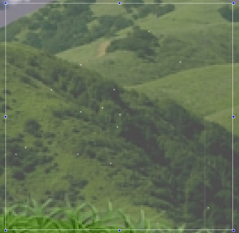

Introduction
When it comes to special effects, particles are the first thing you
should think of when making a game. In this guide, you will learn how to
create particle effects in Torque 2D. Particle effects are commonly
used for things like explosions, rain, smoke, etc.
Particles are generated automatically by a set of parameters inside of
an emitter, which can be edited visually. A single particle effect can
contain multiple emitters, which is a powerful system for creating
amazing and complex effects.
Adding Particle Art
Like every other object that renders to the scene, particle effects
require an ImageMap. Before creating the particles, you need to import
the image. Under the Create tab, click on the "Create a new ImageMap"
button. Locate the image you will use for the particle effect. For this
example, the particles from the RainyDay demo are used:
Double click on the particlesImageMap entry. As with Animated Sprites
and Tile Maps, this ImageMap needs to be in Cell format. Click on the
Image Mode dropdown to display a list of options. Choose the Cell entry to split the image up into four parts. Because of the resolution
and number of cells, this operation should automatically split the image
evenly.
This automatic operation only works for images containing 2x2 cells. You
can still set the values for Cell Count X and Cell Count Y to 2 and see
that the effect is the same. Make sure your final version looks similar to
the following:
Note: In most cases it is best to disable the Filter Pad check box and set Filter Mode to "NONE".
The new imageMap will appear in the Static Sprites rollout in a cell
format. Notice it just shows one frame, which you can cycle through by
clicking the numbers below the preview:

Creating A New Effect
This guide will create a very simple effect which will produce
several raindrops going toward the bottom of the scene. To get started,
open up the Create tab and scroll down to the Particle Effects rollout.
Unless you have created effects previously, there should be only one
entry called newEffect:
Left click on that entry and drag it into your scene. When you let go of
the mouse button, a blank particle effect is added to the scene. This
effect is essentially temporary. You can edit it all you want, but it
will need to be saved if you wish to use it in the future. For now, it
should not be doing anything:
Switch to the Edit tab while you have the new effect selected. Scroll
down to the Particle Effect rollout. You should only have the base
effect data. Click in the Create Emitter text box and type 'drops'. Then click on the green plus button to add the new emitter:
At this point you should have a default emitter. Since there is no
image, animation or frame associated with the emitter, your effect
should still show nothing. Your default emitter should look like this:
Editing An Effect
The first major change you need to make to the emitter is to supply
it with an imageMap. The effect needs to know what it should be drawing
to the screen. Click on the Image drop down box and select the particlesImageMap you imported earlier:
You should immediately see particles rendering in your scene after
selecting the particlesImageMap. Unless you made any other previous
changes, this emitter will be rendering the first frame (or cell) from
the imageMap. This would be the sparkle image:

Move further down in the emitter properties and locate the Frame section. Set this to 1 to use the second cell in the imageMap because
this is the portion of the image containing the rain drop:
Next, scroll down until you see the various check boxes which control the base particle behavior. Disable Use Effect Emission checkbox. This tells the effect to use the emitter property instead of the base effect graph:
Notice how all the rain drop particles are shooting in every direction
from the center of the emitter. Rain typically falls in a straight line down
from a source (like a cloud). To change the origin of particle
creation, scroll down to the Type property. Click on the drop
down, then select LINEX. This means the particles will be generated
across a horizontal line, instead of a single center point or area:
Now it's time to really change the particle emitter behavior. Locate the Edit Emitter Graph button. You will want to left click this to start changing the emitter properties:
A small dialog will pop up with a particle property selected. This is the emitter graph. If you click on the Current Field drop down, you will see all the properties you can change for this emitter:
Don't panic. You do not need to change all the properties to simulate
rainfall. Only five properties need to be modified. From the Current
Field drop down, locate and select Size X Base. Left click on the
red dot in the graph, then drag it up to around 30. It does not
have to be completely perfect, just as close as you can get it:
If you click in a blank area of the box, you will create a new value
node. This does not change the initial value of the Size X Base. What
this does is tell the particle being emitted to change its horizontal
size over time. This allows for more advanced particle effects, but it's
not something you need right now. To get rid of this, right click on
the new node.
You should now be able to see rain drops being emitted from your effect.
Look at the preview to make sure you can see the small white drops
being created. Don't worry about what they are doing just yet. All that
matters is you can see them. If not, increase the size a little more to
your liking:
The rain is currently shooting in every direction. This is controlled by the Emission Arc Base. Switch to that field and you should see the stock value of 360:
This correlates to a circle, with the graph representing values from 0
to 360 degrees. The node is currently at 360, which causes the particles
to shoot in every direction. We want our particles emitting in a
straight line from a single line emitter. To achieve this, drag the
value node down to the very bottom. This results in a value of 0:
Moving on, select the Emission Angle Base field. You will notice
your rain is falling in the wrong direction. It is going straight up,
which is not a desired emission. This is the stock angle ejection for
particles. If you think about circles, what value represents a point or
rotation in the exact opposite direction? The answer is 180 degrees.
The stock values for Emission Angle Base will be -360 / 360, with
a time of 0 / 1. This means you can drag the value node anywhere
between -360 (bottom) to 360 (top). You may find it difficult to carefully nudge the node
somewhere in the top area to get close to an accurate 180. A handy trick
is to change the Value (Min/Max).
Set the Value Min to 0, then the Value Max to 180. Now, setting the
particle emission to go in the exact opposite direction is as simple as
dragging the value node to the top of the graph:
Our current rainfall is a light sprinkling, which can barely sustain
life on the ground. You need to increase the amount of particles that are
generated by this emitter. Switch to the Quantity Base field, then set the value to something close to 45. This should give us enough rain to work with:
Finally, you need to adjust how quickly the rain falls. If this were
snow, you would want to slow it down. Since this is rain, you should
increase the force used to eject particles downward. Switch the current
field to Emission Force Base. If you have not adjusted any values you will be working with a huge range of -1000 to 1000.
Remember the trick shown earlier for setting the Emission Angle Base
range? Repeat this process for the Emission Force Base. Set the Value
Min to 0 and Value Max to 100. This makes it a lot easier to move the
value node to something small, like 17 or 18:
That's it! Click the close button on the emitter graph and admire your
new rain particle effect. You can always go back into the emitter
properties and tweak the effect until you are happy with it:
Saving Effects To File
One last step remains. This new effect is still just temporary.
Torque 2D particle effects need to be saved out to a file. This allows
your game to load the effect when it needs it and provides you with the
option to share particle effects with other projects or teams.
Scroll back to the top of the Particle Effect rollout. Look for the Save Effect button. Click that button, then choose a directory in your game project to save the effect. For this example, a particles folder was created in the projectFiles/game/data directory. Set the file's name to rain.eff, then click Save.
That's it! Making rain fall is not a complex effect, nor does it require
a lot of work. However, there are plenty of tweaks that could be made
to the effect. For example, if you know there will be a "wind" factor in
your game, you can change the motion variance so the rain does not
always fall in a straight line.
Effect Properties
A single Effect consists of a collection of Emitters. These settings will affect all Emitters within this Effect.
- Effect Mode - Affects the base life of a particle effect. With the exception of INFINITE, the options use the Effect Lifetime property
- INFINITE - Effect has an infinite lifespan, never looping
- CYCLE - The effect will repeat from start to finish in cycles. The interval between cycles is defined by the Effect Lifetime
- KILL - The effect will delete itself once the Effect Lifetime elapses
- STOP - The effect will stop playing, but not delete itself, once the Effect Lifetime elapses
- Use Effect Collisions - When enabled, individual
particle collision will be turned on. Whenever a particle node collides
with another object in the same collision group or mask, the function onParticleCollision will be called for the emitter.
- Create Emitter - When clicked, will create a blank emitter using the specified name
Emitter Properties
Each Emitter within an Effect has its own list of Properties. These
Properties define how the Effect functions, looks and animates within
your Scene.
- Image - The imagemap, defined on the Create tab, which contains the imagery to use for this Emitter.
- Animation - An animation, created on the Create tab, to use for this Emitter. If used, this will override the Image property.
- Type - How to orient this emitter.
- AREA - Particles will be created randomly throughout the entire Area of this Effect.
- LINEX - Particles will be created across the horizontal center of the Area of this Effect.
- LINEY - Particles will be created across the vertical center of the Area of this Effect.
- POINT - Particles will be created at the center (relative position 0,0) of this Effect.
- Orientation - The rotation that Particles will have when
spawned within this Emitter. The following Pivot properly is used
differently for each Orientation option.
- ALIGNED - All particles will be oriented in the same direction, and will have no rotation.
- FIXED - All particles will be rotated by the same amount when spawned. The rotation is defined in the Fixed Angle field.
- RANDOM - All particles will be rotated in a random angle when spawned.
- Fixed Angle - Defines the spawn rotation angle of the
Particles when the FIXED orientation type is used. Has no effect in
other Orientation options.
- Pivot - Defines the offset that Particles will have from the center of the Emitter Area when spawned.
- Force Angle - Used by the 'Fixed Force' graphs. Usually this is used for simulating gravity.
- Fixed Aspect - When this is selected, the particle's
overall size is defined by their Size X in the graphs, with their Y
sizes proportionally scaled. When this is not selected, its Y scale and X
scale are determined separately, by 'Size Y' and 'Size X'.
- Use Effect Emission - Allows many of the emitters graph values to be set by the overall effect's graphs.
- Intense Particles - Makes the particles look fire-like.
- Single Particle - Only shows one particle at a time. This is helpful for editing certain properties.
- Attach Position - When this is selected, all particles
will move with the particle effect object when it is moved. Otherwise,
they will trail behind it, pursuing their individual destinies.
- Attach Rotation - When this is selected, all particles
will follow the rotation of the particle effect object, similar to the
Attach Position property.
- Rotate Emission - Aligns the emitter with the particle effect object. This is useful for directional particles, like jet flames.
- First in Front - Normally when a particle is created, it
is seen in front of previous particles that were created by its
particle effect. When this is checked, new particles are created behind
previously particles.
Graphs
All movement and life properties of Effects and Emitters in Torque 2D
are modified by a simple graph system. This graph system allows a
single property to have an effect that gets stronger or weaker at any
desired speed during the course of the life of a single particle, or
during the life of the Emitter as a whole.
The lower a node is on the graph, the lower the number. The higher a
node is on the graph, the higher the number. The far-left is at time
'0.0' of the life, while the far-left is at the end, or time '1.0' of
the life.
More nodes can be simply added by clicking on the graph. Clicking and
dragging on a node will move it, while right-clicking on a node will
remove it.
When editing Effects, there are two types of graphs - Effect Graphs and
Emitter Graphs.
Effect Graph Properties in the Effect Graph will affect all Emitters attached to this Effect as a whole.
- Particle Life Scale - Scales the life of particles.
- Quantity Scale - Scales the quantity of particles.
- Size X Scale - Scales the size of particles along the X coordinate.
- Size Y Scale - Scales the size of particles along the Y coordinate.
- Speed Scale - Scales the speed of particles.
- Spin Scale - Scales the spin of particles.
- Fixed Force Scale - Scales the Fixed Force of particles.
- Random Motion Scale - Scales the Random Motion of particles.
- Visibility Scale - Scales the Visibility of particles.
- Emission Force Base - The speed that particles will move when spawned.
- Emission Force Variance - Allowed randomness floor and ceiling that the Emission Force may have.
- Emission Angle Base - The base angle that particles will be spawned to move in.
- Emission Angle Variance - Allowed randomness floor and ceiling that the Angle may have.
- Emission Arc Base - The base arc that particles will be 'thrown' in when created.
- Emission Arc Variance - Allowed randomness floor and ceiling that the Arc may have.
Emitter Graph
- Particle Life Base - The base duration of a particle in the world before it is destroyed.
- Particle Life Variance - Allowed randomness floor and ceiling that the Particle Life may have.
- Size X Base - Size of particles along the X coordinate.
- Size X Variance - Allowed randomness floor and ceiling that the X size may have.
- Size X Life - The life of the animation along the X coordinate through the total life of the particle.
- Size Y Base - Size of particles along the Y coordinate.
- Size Y Variance - Allowed randomness floor and ceiling that the Y size may have.
- Size Y Life - The life of the animation along the Y coordinate through the total life of the particle.
- Speed Base - The speed at which spawned particles will move.
- Speed Variance - Allowed randomness floor and ceiling that the Speed may have.
- Speed Life - The life of the speed animation through the total life of the particle.
- Spin Base - The speed that a particle will rotate.
- Spin Variance - Allowed randomness floor and ceiling that the Spin may have.
- Spin Life - The life of the Spin animation through the total life of the particle.
- Fixed Force Base - The speed and direction that
particles will move. A positive number moves up on the screen, while a
negative number moves down. The higher / lower the number, the faster
the movement is.
- Fixed Force Variance - Allowed randomness floor and ceiling that the Fixed Force may have.
- Fixed Force Life - The duration of the Fixed Force animation through the total life of the particle.
- Random Motion Base - The higher the number, the more the particles will randomize their movements in all directions.
- Random Motion Variance - Allowed randomness floor and ceiling that the Random Motion may have.
- Random Motion Life - The life of the Random Motion animation through the total life of the particle.
- Emission Force Base - The speed that particles will move when spawned.
- Emission Force Variance - Allowed randomness floor and ceiling that the Emission Force may have.
- Emission Angle Base - The base angle that particles will move in when created.
- Emission Angle Variance - Allowed randomness floor and ceiling that the Angle may have.
- Emission Arc Base - The Arc to the base Angle movement that the particle will move in when created.
- Emission Arc Variance - Allowed randomness floor and ceiling that the Arc may have.
- Red Color Life - The strength of the Red color channel to a particle during the life of the particle.
- Green Color Life - The strength of the Green color channel to a particle during the life of the particle.
- Blue Color Life - The strength of the Blue color channel to a particle during the life of the particle.
- Visibility Life - The transparency of a particle during the life of the particle.
Script Representation
When you add a particle effect to your scene and save, the following is what will exist in the level file:
new t2dParticleEffect() {
effectFile = "data/particles/rain.eff";
useEffectCollisions = "0";
effectMode = "INFINITE";
effectTime = "0";
canSaveDynamicFields = "1";
Position = "155.803 -67.181";
size = "111.049 128.000";
Layer = "1";
CollisionMaxIterations = "3";
AlphaTestValue = "-1";
UsesPhysics = "1";
MountOffset = "0.005 0.842";
mountID = "5";
mountToID = "3";
};
Conclusion
This concludes the introduction to particle effects. The Torque 2D
particle editor is extremely powerful and versatile. While not every
game needs particles, it is often a good idea to plan ahead for them.
The instructions you learned in this guide are essential and used all
throughout your development. |